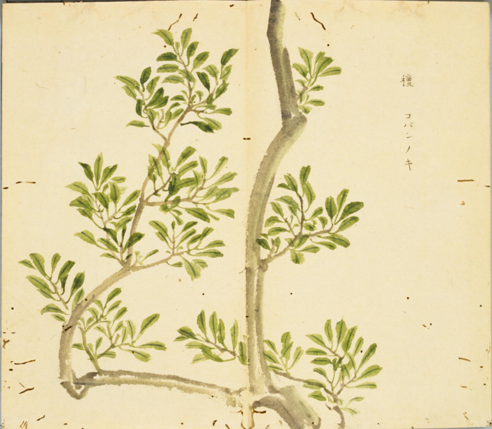
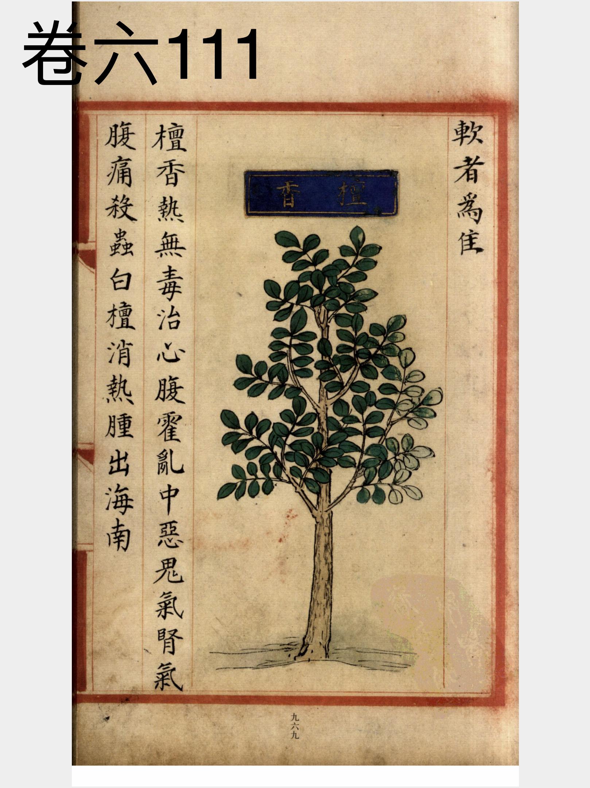
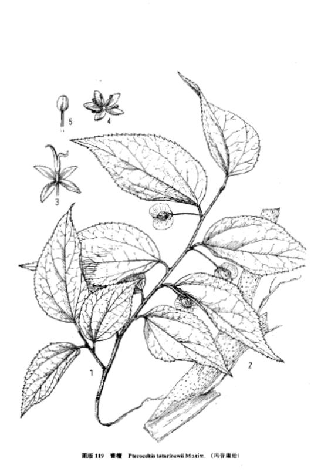

出现篇目
古代记载 《毛诗故训传》
檀，强韧之木。（《毛传》注《将仲子》）
《毛诗正义》
《大宰职》云：“园圃，毓草木。”园者圃之蕃，故其内可以种木也。檀材可以为车，故云“强韧之木。”陆机《疏》云：“檀木皮正青滑泽，与檕迷相似，又似驳马。驳马，梓檎。故里语曰：‘斫檀不谛得檕迷，檕迷尚可得驳马。’檕迷一名挈橀，故齐人谚曰：‘上山斫檀，挈橀先殚。’”（《毛诗正义》疏《将仲子》）
《诗集传》
檀、皮青滑澤、材彊韌可爲車。（《诗集传》集注《将仲子》)
檀、木可爲車者。（《诗集传》集注《伐檀》）
《本草纲目》
藏器曰∶白檀出海南。树如檀。 恭曰∶紫真檀出昆仑盘盘国。虽不生中华，人间遍有之。 颂曰：檀香有数种，黄、白、紫之异，今人盛用之。江淮、河朔所生檀木，即其类，但不香尔。 时珍曰∶按∶《大明一统志》云∶檀香出广东、云南，及占城、真腊、爪哇、渤泥、暹罗、三佛齐、回回等国，今岭南诸地亦皆有之。树、叶皆似荔枝，皮青色而滑泽。叶廷珪《香谱》云∶皮实而色黄者为黄檀，皮洁而色白者为白檀，皮腐而色紫者为其木并坚重清香，而白檀尤良。宜以纸封收，则不泄气。王佐《格古论》云∶紫檀诸溪峒出之。性坚。新者色红，旧者色紫，有蟹爪文。新者以水浸之，可染物。真者揩壁上色紫，故有紫檀名。黄檀最香。俱可作带 、扇骨等物。
当代记载 《中国植物志》
青檀（Pteroceltis tatarinowii），大麻科，青檀属植物。乔木，高达20米或20米以上，胸径达70厘米或1米以上；树皮灰色或深灰色，不规则的长片状剥落。叶纸质，宽卵形至长卵形。翅果状坚果近圆形或近四方形，黄绿色或黄褐色，果梗纤细，被短柔毛。花期3-5月，果期8-10月。
产辽宁（大连蛇岛）、河北、山西、陕西、甘肃南部、青海东南部、山东、江苏、安徽、浙江、江西、福建、河南、湖北、湖南、广东、广西、四川和贵州。常生于山谷溪边石灰岩山地疏林中，海拔100-1 500米。在村旁、公园有栽培。

<细井徇>

<补遗雷公炮制便览>

<中国植物志>